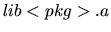

To build an application that uses PdTRAV, you should add a line
#include "<pkg>.h"
to your source files, and should link  (for any given within PdTRAV you need) to your executable. Some platforms require specific compiler and linker flags. Refer to the Makefile in the top level directory of the distribution.
A brief description of the main sub-packages packages follows. They are characterized by a set of functions and manager structure (accessed to by pointer) describing a consistent working environment for operations. Moreover, DDI defines the BDD based data types used by our package.